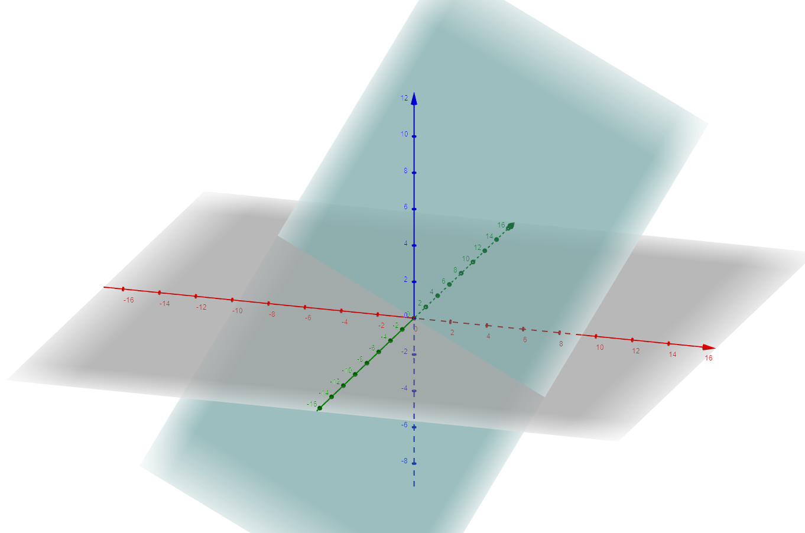

The pane to the left is a 2D space where selected function will be minimized. |
The dot points to the solution given by the Cuckoo search at each iteration. |
The link represents the evolution path of the solution. |
The function's graph: (graphs are from this page). |
|

|